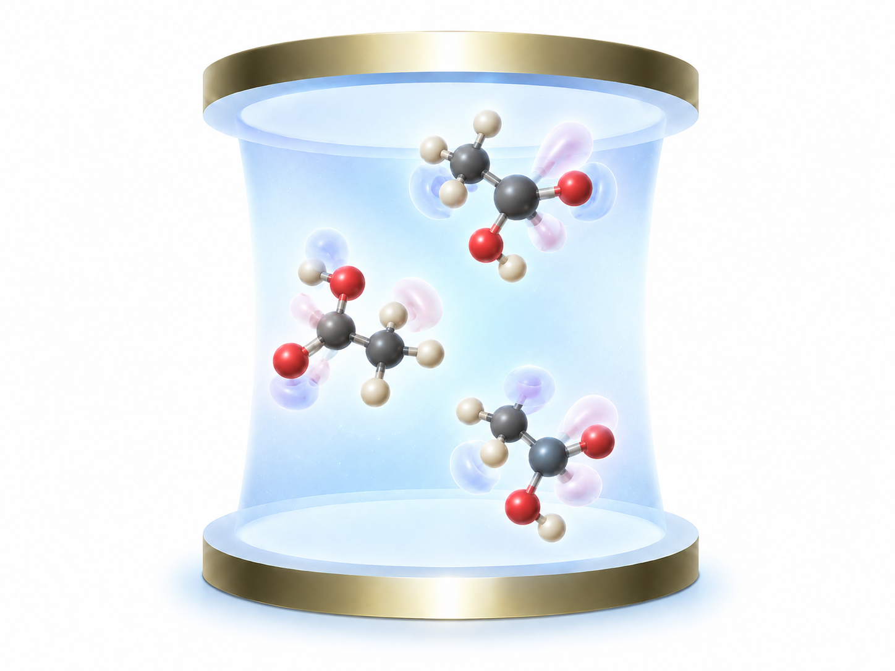
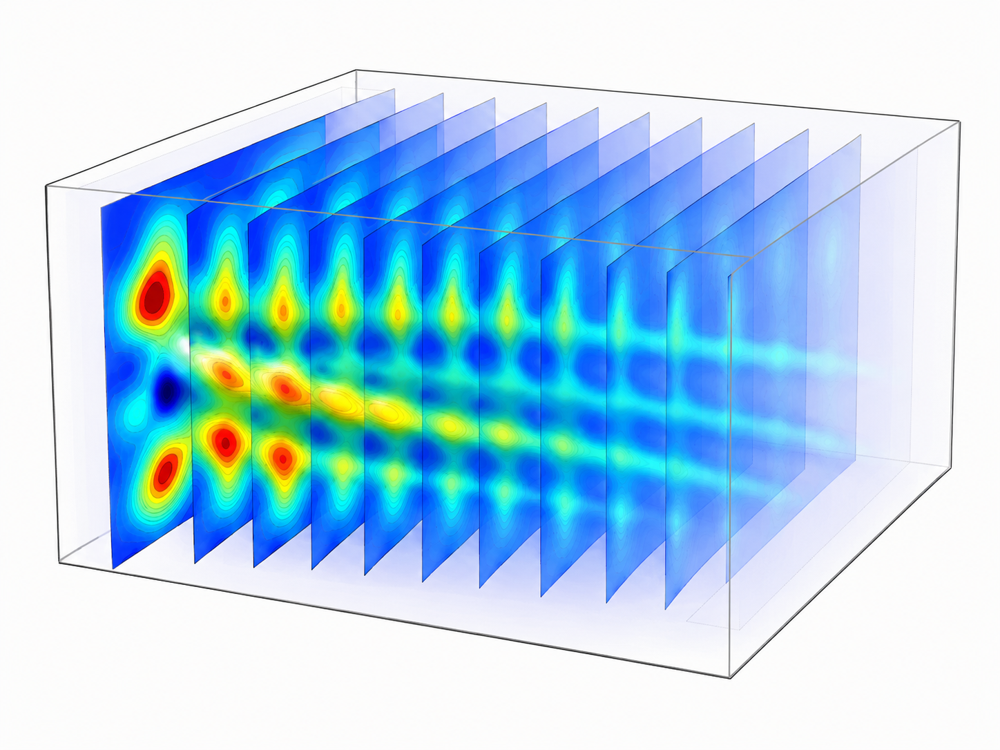
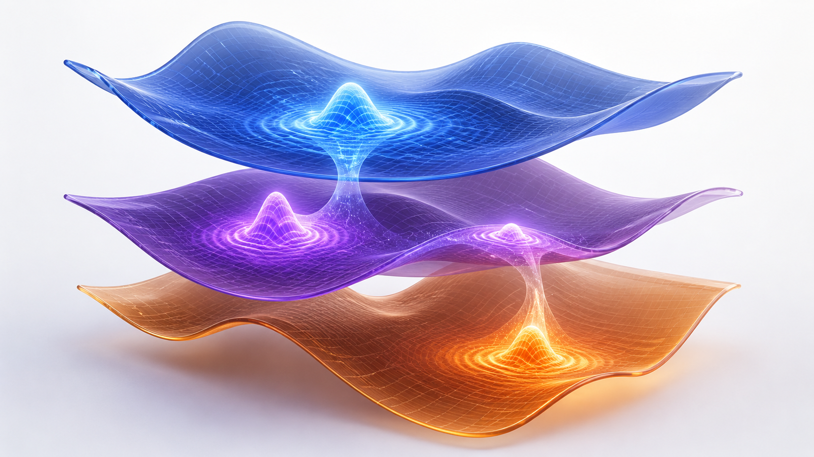
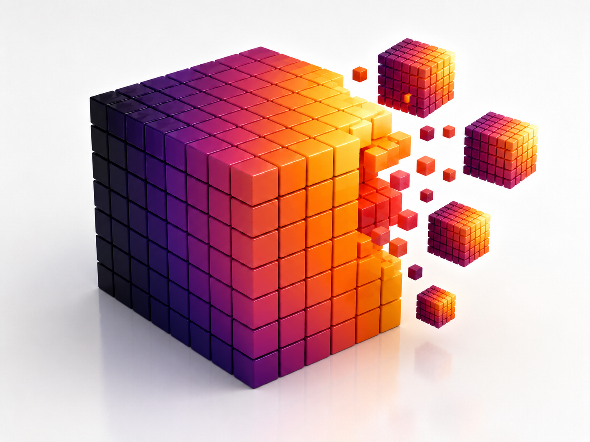

Theoretical & computational chemistry
I study how light reshapes molecular matter.
Postdoctoral researcher · University of California, Los Angeles
I develop quantum-dynamics methods to understand molecular polaritons, condensed-phase spectroscopy, and open quantum systems at realistic scales.
About
Connecting rigorous theory to experiments we can measure.
I am a postdoctoral researcher at the University of California, Los Angeles, working with Prof. Thomas Fay on theoretical descriptions of chirality-induced spin selectivity (CISS). I completed my Ph.D. in Chemistry with Prof. Pengfei (Frank) Huo at the University of Rochester, where I developed theories and efficient computational methods for the spectroscopy of large excitonic and vibrational ensembles.
I have built trajectory-based mixed quantum–classical (MQC) methods, as well as exact quantum dynamics methods where I have honed my expertise in developing efficient algorithms and high-performance software in Python. Before Rochester, I completed an integrated BS–MS at IISER Bhopal, studying decoherence corrections for surface-hopping dynamics with Prof. Varadharajan Srinivasan.
- Exciton–polaritons
- 2D spectroscopy
- Open quantum systems
- PLDM
- Vibrational strong coupling
- HEOM
- Scientific computing
Education
- Ph.D. in ChemistryUniversity of Rochester
- M.S. in ChemistryUniversity of Rochester
- Integrated BS–MS in ChemistryIISER Bhopal
Research themes
From molecular motion to collective quantum states.

01Light–matter interaction
Cavity-modified chemistry
Polaritons · VSC · Cavity QED
02Reading molecular motion
Condensed-phase spectroscopy
Linear spectra · 2DES
03Dynamics in context
Open quantum systems
PLDM · Lindblad · Mapping
04Computational methods
Numerical methods for quantum dynamics
Sparse operators · Efficient propagationSelected work
Recent publications.
- 2026
-
2026
Nature Communications
A macroscopic condensation theory for vibrational strong coupling effects
-
2026
Proceedings of the National Academy of Sciences
Long-Lived Polaritonic Coherence and Polaron Decoupling Effects in 2D Electronic Spectra
Recognition
Awards & fellowships.
Selected recognitions across research and education.
Agnes M. and George Messersmith Fellowship
University of Rochester dissertation fellowship
Finalist, ACS Physical Chemistry Graduate Awards
Theoretical Chemistry
Wu Fellowship
Department of Chemistry, University of Rochester
Journal of Physical Chemistry Poster Award
American Conference on Theoretical Chemistry
Wu Fellowship
Department of Chemistry, University of Rochester
KVPY Fellowship
Department of Science and Technology, India
Start a conversation
Interested in quantum dynamics, spectroscopy, or collaboration?
Department of Chemistry & Biochemistry
University of California, Los Angeles
Los Angeles, CA